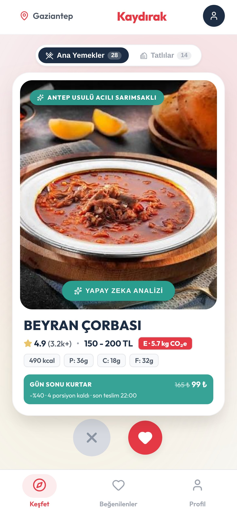
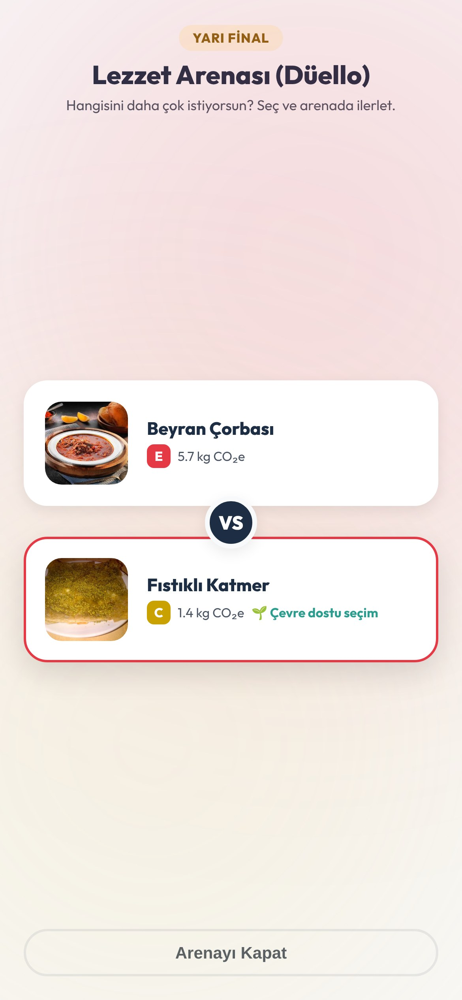
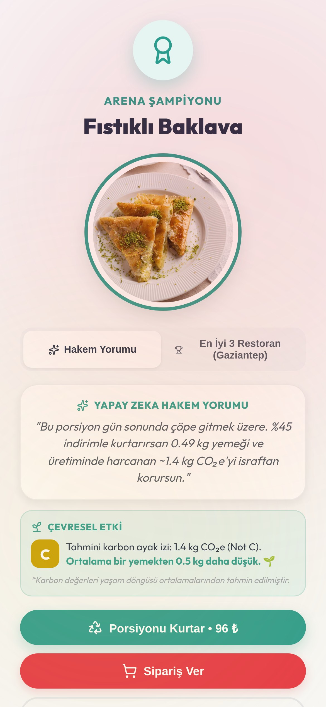
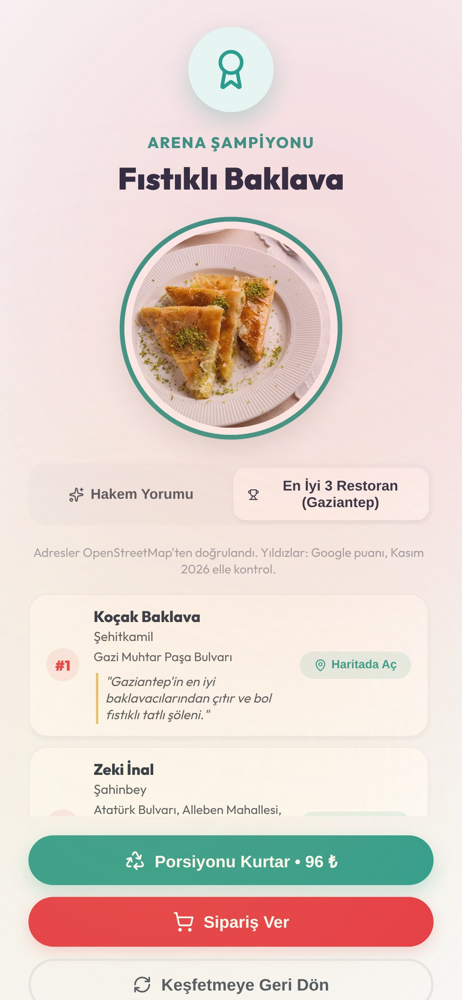

1Problem
Restoranların gün sonunda satamadığı porsiyonlar çöpe gidiyor; kullanıcı ise ne yiyeceğine karar veremeden menülerde kayboluyor. Seçim anında yemeğin çevresel etkisi de görünmüyor.
2Amaç
- Kararsızlığı kaydırma ve düello ile saniyelere indirmek.
- Gün sonu artan porsiyonları %40–60 indirimle kullanıcıya ulaştırıp israfı önlemek.
- Her yemeğin karbon ayak izini seçim anında görünür kılmak.
- Kullanıcıyı gerçek ve yerel restoranlara ve yöresel lezzetlere yönlendirmek.
- Kullanıcının seçimlerinden öğrenip kişiye özel öneriler sunmak.
3Çözüm: Gaziantep'te bir akşam
Kullanıcı Sıfır Atık modunda Antep yemeklerini kaydırır, tatlıları ayrı Tatlılar sekmesinden seçer, beğendiklerini düelloda eler; kazanan, gün sonunda çöpe gitmek üzere olan bir porsiyondur ve tek dokunuşla kurtarılır.




4Yöntem
Karbon notu: Her yemek içeriğine göre bir sınıfa girer; porsiyon başına kg CO₂e tahmini kaloriyle ölçeklenir ve A–E notuna çevrilir (Poore ve Nemecek, Science 2018 verisi).
Kişisel öneri: Son 5 seçimin türleri (et, tavuk, balık, sebze…) sayılır; önerilerin ~%80'i en çok seçilen türlerden, ~%20'si keşif için farklı türlerden gelir. Az önce seçilenler üste konmaz.
Gerçek restoranlar: Listedeki her restoran OpenStreetMap'te arandı; adı ve semti tutanlar gerçek adresiyle gösterilir, doğrulanamayan puan gösterilmez.
5Özgünlük
- İsraf önleme, kullanıcının zaten yaptığı “ne yesem?” seçiminin içinde; ayrı bir indirim uygulaması değil.
- Kurtarılacak porsiyon adı, besin değeri ve karbon notuyla gösterilir, sürpriz paket değildir.
- Oyunlaştırma: kaydırma, düello ve etki sayacı.
- Yöresel: Turist modunda seçilen şehrin kendi lezzetleri önce gelir.
- Dürüst veri: doğrulanmış adres, uydurma puan yok.
6Kullanılan teknolojiler
7Sonuçlar
Çalışan prototip: Android (Google Play kapalı test) ve web; iPhone'da tarayıcıdan çalışır, iOS paketi aynı kodla derlenebilir.
8Beklenen çıktılar
Etki sayacı her kurtarmayı kg yemek, kg CO₂e ve ₺ olarak ölçer.
9Gelecek hedefleri
- Restoran paneli: işletme gün sonu porsiyonlarını kendisi girer.
- Gaziantep pilotu: yerel restoranlarla gerçek kurtarma verisi.
- Tarif bazlı karbon hesabı ve aylık etki raporu.
- Bağış: satılamayan porsiyonları gıda bankalarına yönlendirme.
- App Store: aynı kodla iOS sürümü.